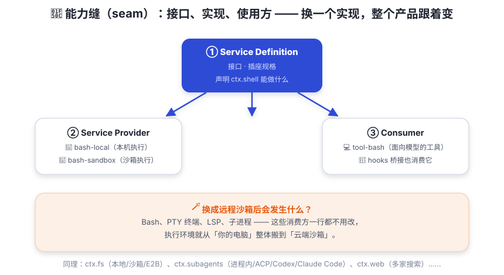

能力缝：可替换的能力
接口、实现、使用方三件套。换一个实现，整个产品跟着变 —— 这是 dsh 魔法的真正来源。
你的笔记本电源适配器坏了。你不需要换电脑，只需要买一个「同规格的适配器」。因为接口是标准的：插头、电压、电流都约定好了——这就是为什么你可以借同事的充电器救急，而不是把整台电脑扔进垃圾桶。
dsh 里每一类可替换能力都遵循同样的思路，并且给它起了一个专门的词：seam（能力缝）。seam 是「可替换能力的完整三件套」——少了任何一件，都不叫 seam：就像充电器少一个脚，插不进任何插座。

三件套拆开看
① Service Definition —— 接口
拥有自己的 ctx.<key> 和类型词汇的 Cordis 服务（注意：是 Cordis Service，
不是 TypeScript interface）。它回答「这项能力长什么样、能做什么」。
例如 ctx.shell 声明「bash 执行器」应该提供什么。
② Service Provider —— 实现
真正干活的实现，通常不止一个：ctx.shell 有 dsh-bash-local
（本机执行）和 dsh-bash-sandbox（沙箱执行），
还有 Windows 的 dsh-pwsh-local（PowerShell）。
③ Consumer —— 使用方
注入并使用该服务的插件，通常是面向模型的工具：
dsh-tool-bash 让模型能跑 bash 命令；hooks 桥接（Claude Code / Codex）也消费它。
seam 是完整能力，绝不是其中一个角色。
术语「seam」只保留这个含义；成员应该按角色、类、服务来命名。
一个包也可以同时承担多个角色 —— 比如 dsh-llm 同时是 Service Definition 和 Consumer。
换一个提供方，世界就变了
这就是 dsh 最迷人的地方：文件系统与进程提供方共享同一个执行世界。
把 ctx.fs、ctx.subprocess 的实现从「本地」换成「E2B 远程沙箱」，
那么基于它们构建的 Bash、PTY 终端、LSP 语言服务器 —— 全部一起搬到了远程 Linux 环境，
不需要任何提供方专用的 fork，消费方一行不改。
类似的 seam 遍布全产品：
| ctx 键 | 能力 | 提供方示例 |
|---|---|---|
ctx.llm | 模型适配 | llm-deepseek（DeepSeek）、llm-pi-ai，以及测试用的 llm-replay |
ctx.fs | 文件系统 | fs-local（本地）、fs-sandbox（受限）、fs-e2b（远程） |
ctx.subprocess | 子进程 | subprocess-local、subprocess-e2b |
ctx.subagents | 子代理传输 | 进程内 spawn/fork、ACP、Codex、Claude Code、dsh-sdk |
ctx.web | 网页搜索/抓取 | web-search-exa / perplexity / deepseek、web-fetch-http |
ctx.sandbox | 进程沙箱 | sandbox-local（按策略包装 argv） |
ctx.sessionPersistence | 会话持久化 | session-persistence-jsonl、session-persistence-sqlite |
ctx.approval | 审批通道 | ACP 为自己的 agent 提供桥接监听器 |
因为依赖被固定在「接口」上而不是「实现」上（第 04 章讲的服务按 key 查找）。
于是：换模型不用改循环；换沙箱不用改工具；换持久化后端不用改任何业务插件。
整个产品的能力边界由这些 seam 划出 —— 读源码时看到 ctx.xxx，
就知道这里有一道「可以换插头」的缝。